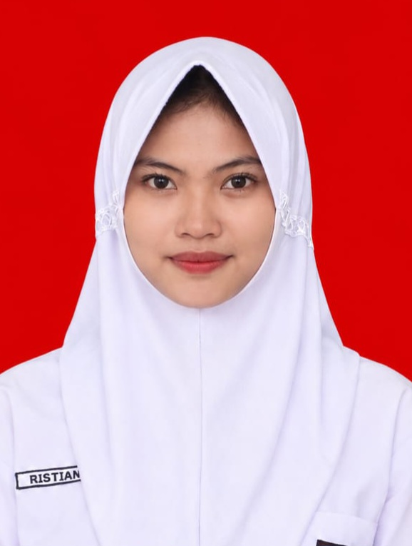

Curriculum Vitae
Teknik Jaringan Komputer • Administrasi
Lulusan SMKN Sukaresik dengan bekal keterampilan teknis di bidang jaringan komputer (Mikrotik, router, switch, dan pembuatan kabel LAN) serta soft skills yang baik: mampu bekerja sama dalam tim, berkomunikasi dengan baik, disiplin, dan bertanggung jawab. Siap berkontribusi, belajar cepat, dan terbuka untuk kesempatan kerja di wilayah Tasikmalaya dan sekitarnya.
| Nama Lengkap | : Ristiani |
| Alamat | : Kp. Ciomas Wetan, Des. Margamulya, Kec. Sukaresik, Kab. Tasikmalaya, Jawa Barat |
| No. HP / WA | : 0858-7605-0919 |
| : @ristiani_2109 | |
| Pendidikan | : SMKN Sukaresik |
| Status | : Terbuka untuk kesempatan kerja |
Sekolah Menengah Kejuruan — Kabupaten Tasikmalaya, Jawa Barat
Menempuh pendidikan kejuruan dengan pembekalan keterampilan praktis di bidang teknik dan teknologi, termasuk dasar jaringan komputer, komputer perkantoran, dan etika kerja profesional.
Membaca menambah wawasan dan melatih fokus; menonton konten edukatif melatih analisis dan konsentrasi — mendukung kebiasaan belajar dan ketelitian dalam bekerja.
Demikian CV ini saya buat dengan sebenar-benarnya. Saya siap mengikuti proses seleksi, wawancara, maupun magang kerja. Terima kasih atas perhatian Bapak/Ibu.
Ristiani